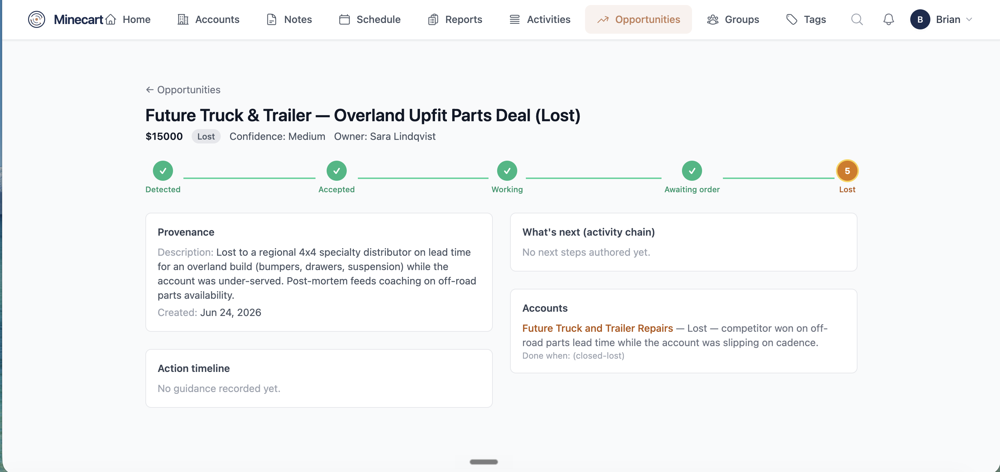
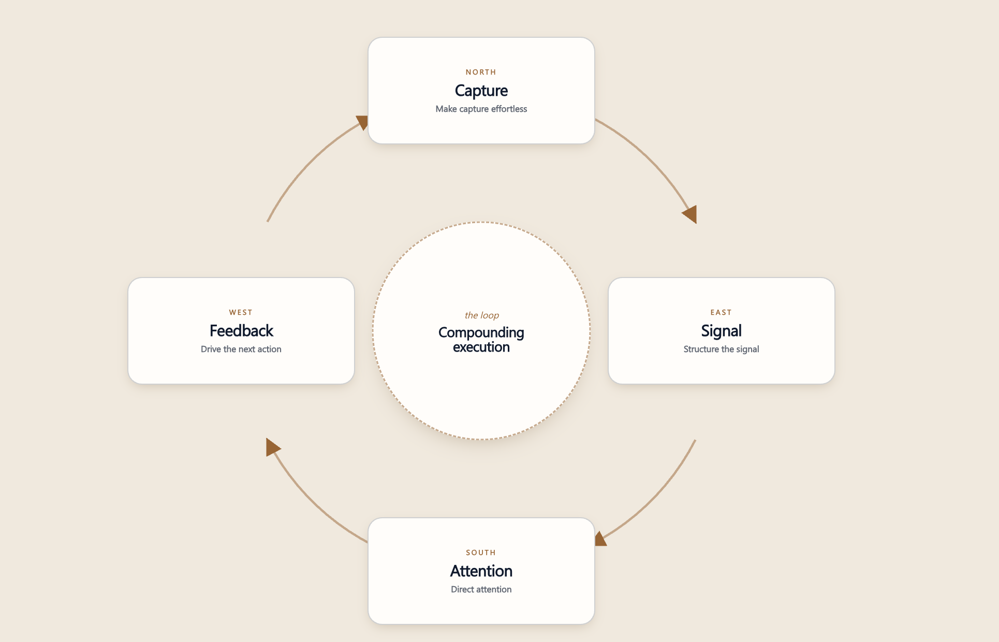

Executive briefing · Prepared for Forvia HELLA, US Aftermarket
You've invested real money in Salesforce, and it does what it was built to do: record. But it doesn't tell a rep what to do next, most of what the field hears never gets logged, and what does get in goes stale. Strategy ends up waiting on information that's sitting in your own people's heads.
Tromml is built for the automotive aftermarket. We turn what your frontline hears every day into something your managers can see and act on.
★ Winner · 2025 MEMA Innovation Award
Some of your reps walk into meetings prepared. Most don't have the time, and it shows in the conversations they have and the orders that follow. After the meeting, logging notes is administrative work that competes with selling, so it doesn't happen, and what the customer said stays in one person's head. The same thing plays out at the service desk, on inside sales calls, and inside your rep agencies: people hear valuable things all day, and almost none of it comes back.
So managers are directing teams they can't see into, strategy gets built on stale information, and the company never builds intelligence it owns. That gap is exactly what we close. We capture what your frontline actually hears and put it in front of the people who can act on it. CRMs track what happened. Tromml captures what was said.
Salesforce is doing its job as your system of record. What it can't be is a system of action.
We aren't here to replace Salesforce. We make it worth what you pay for it, by getting the field truth into it and turning it into something your team can act on.
Managers who can finally see
Your sales managers see what customers are actually saying across every account, where the money and the risk sit, and who needs direction today. Visibility turns into action instead of a quarterly surprise.
Reps who walk in prepared
Every rep gets a briefing before every meeting, built from their own notes and history. The gap between your best-prepared rep and the rest closes, and the admin work that kept them from selling goes away.
A company that builds intelligence
Every conversation becomes an asset HELLA owns. It stops walking out the door with turnover, and it flows back into Salesforce and your ERP so the record stays current on its own.
Your managers get specific insights out of data HELLA already has: sales notes and calls. Two things make that possible, and neither asks your team to change how they work.
1 Capture is effortless
A rep talks a quick voice note after a meeting, a field visit, or a booth conversation. No forms, no call reports. It becomes a clean note tied to the account, and they walk into the next stop briefed.

Capture by talking. One voice note, no forms.

Walk in briefed. Opportunities and risks from your own notes.

The list ranks itself by what needs attention.
2 We pull in what already exists
Rep agency notes, recorded customer service calls, inside sales calls: we read what HELLA already collects and build it into one picture. Zero lift, and it's often where the richest intel comes from.

Recorded calls, read and turned into tracked opportunities. Real deals surfaced and tied to the account.
And it compounds. Every captured conversation feeds the next briefing, better briefings produce better conversations, and the intelligence builds in the system instead of walking out with whoever had it.

Your sales team isn't just selling your products — they're unlocking key market insights every day. Each department gets its own lens into that intelligence, so better decisions across the business come back around to drive greater sales.
A ranked view of what needs attention, where to coach, and which opportunities are sitting open.
Walk in briefed, with follow-ups and opportunities pulled from their own notes.
The parts customers keep asking for, coverage gaps, and what's moving a category before the number does.
Voice of customer in their own words: the objections that repeat, and why buyers choose you or don't.
The escalations to handle today, and the recurring problems worth fixing at the source.
One page on what the field is really saying, and where the risk and opportunity sit. No login required.
Customer story · OK4WD
They had recorded every service and sales call for two years and could act on only the handful a manager happened to overhear. We read every one and built a single short report around one question: what do I need to look at today?
Notice what came out. Not a sentiment score. The open sales nobody had chased, the customers to call back today, the demand for parts that weren't stocked. Real things to act on. OK4WD is a single store; your US service desk is that same asset at far larger scale.
Customer story · SKF Group
SKF Group, a global bearings and seals manufacturer, used to run its shows on business cards and a two-hour post-show meeting where people tried to remember who they had talked to. At the TMC show in Nashville, their team captured every booth conversation by talking into their phone.
By the end of the show, that was more than 100 notes, 120 follow-ups, and visibility into over $7M in pipeline, each opportunity tied to the conversation that created it. The show floor stopped being a black hole and became a ranked list of prospects.
No purchase, no deployment, no one changing how they work. Send us a slice of what you already have — for HELLA, that's likely a batch of recorded calls or the data already sitting in Salesforce — and we come back with the real opportunities in it, not a sentiment chart.
Behind that first read is the full system: Minecart capturing the field, the same analysis running continuously, and the results flowing to each team and back into Salesforce. But you don't buy a system on day one. You look at what's in your own data and decide.
Fifteen minutes to set up. You see what's in your own data, and you decide whether it goes further.
Get a free Signal AnalysisTrusted by


Built for the aftermarket, by people who know it


Tromml is built for the automotive aftermarket. CRMs track what happened; we capture what was said, and feed it back so the record you already pay for finally holds the field truth. It starts with a free Signal Analysis and a short conversation.